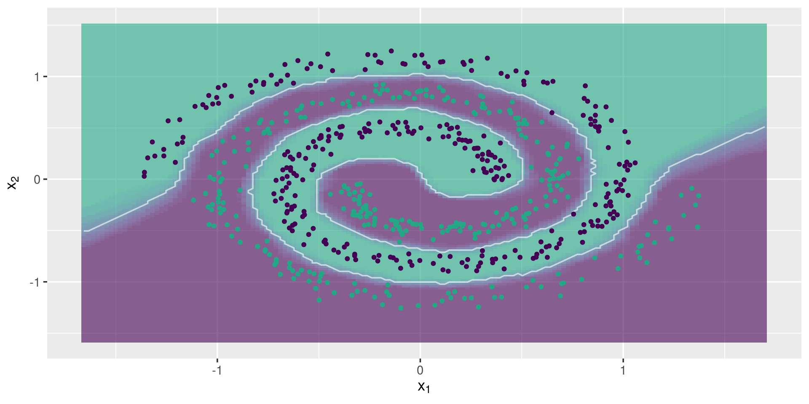
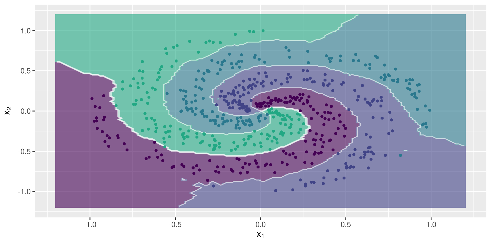
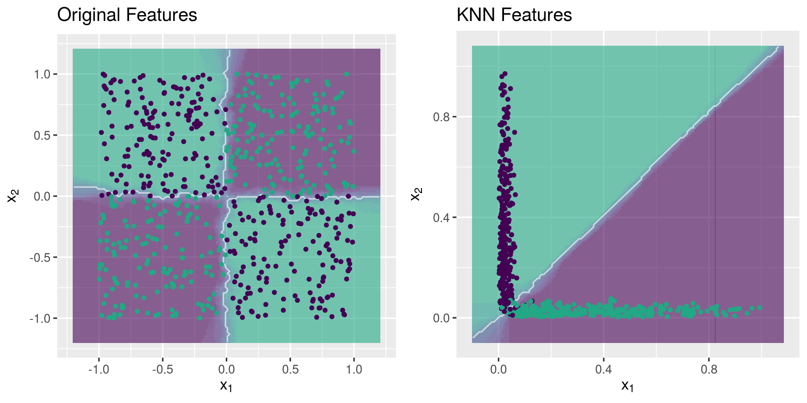
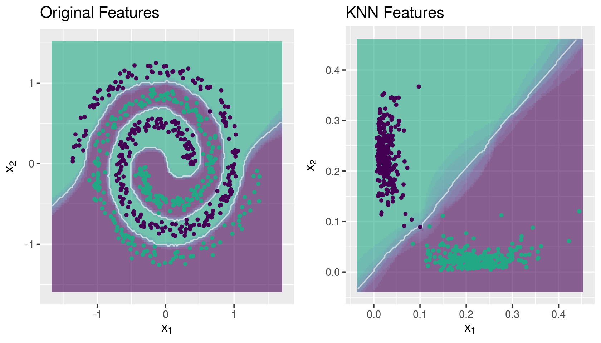

Fast KNN with shrinkage estimator for the class membership probabilities

The fastknn in now available on Kaggle. Take a look at this kernel to see an example on how to use fastknn to improve your performance on Kaggle competitions.
Why fastknn?
- Build KNN classifiers with large datasets (> 100k rows) in a few seconds.
- Predict more calibrated probabilities and reduce log-loss with the
"dist"estimator. - Find the best k parameter according to a variety of loss functions, using n-fold cross validation.
- Plot beautiful classification decision boundaries for your dataset.
- Do feature engineering and extract high informative features from your dataset.
- Compete in Kaggle.
Give it a try and let me know what you think!
Fast Nearest Neighbor Searching
The fastknn method implements a k-Nearest Neighbor (KNN) classifier based on the ANN library. ANN is written in C++ and is able to find the k nearest neighbors for every point in a given dataset in O(N log N) time. The package RANN provides an easy interface to use ANN library in R.
The FastKNN Classifier
The fastknn was developed to deal with very large datasets (> 100k rows) and is ideal to Kaggle competitions. It can be about 50x faster then the popular knn method from the R package class, for large datasets. Moreover, fastknn provides a shrinkage estimator to the class membership probabilities, based on the inverse distances of the nearest neighbors (see the equations on fastknn website):
\[ P(x_i \in y_j) = \displaystyle\frac{\displaystyle\sum\limits_{k=1}^K \left( \frac{1}{d_{ik}}\cdot(n_{ik} \in y_j) \right)}{\displaystyle\sum\limits_{k=1}^K \left( \frac{1}{d_{ik}} \right)} \]
where \(x_i\) is the \(i^{\text{th}}\) test instance, \(y_j\) is the \(j^{\text{th}}\) unique class label, \(n_{ik}\) is the \(k^{\text{th}}\) nearest neighbor of \(x_i\), and \(d_{ik}\) is the distance between \(x_i\) and \(n_{ik}\). This estimator can be thought of as a weighted voting rule, where those neighbors that are more close to \(x_i\) will have more influence on predicting \(x_i\)’s label.
In general, the weighted estimator provides more calibrated probabilities when compared with the traditional estimator based on the label proportions of the nearest neighbors, and reduces logarithmic loss (log-loss).
How to install fastknn?
The package fastknn is not on CRAN, so you need to install it directly from GitHub:
library("devtools")
install_github("davpinto/fastknn")Required Packages
The base of fastknn is the RANN package, but other packages are required to make fastknn work properly. All of them are automatically installed when you install the fastknn.
RANNfor fast nearest neighbors searching,foreachanddoSNOWto do parallelized cross-validation,Metricsto measure classification performance,matrixStatsfor fast matrix column-wise and row-wise statistics,ggplot2to plot classification decision boundaries,viridisfor modern color palletes.
Getting Started
Using fastknn is as simple as:
## Load packages
library("fastknn")
library("caTools")
## Load toy data
data("chess", package = "fastknn")
## Split data for training and test
set.seed(123)
tr.idx <- which(caTools::sample.split(Y = chess$y, SplitRatio = 0.7))
x.tr <- chess$x[tr.idx, ]
x.te <- chess$x[-tr.idx, ]
y.tr <- chess$y[tr.idx]
y.te <- chess$y[-tr.idx]
## Fit KNN
yhat <- fastknn(x.tr, y.tr, x.te, k = 10)
## Evaluate model on test set
sprintf("Accuracy: %.2f", 100 * (1 - classLoss(actual = y.te, predicted = yhat$class)))## [1] "Accuracy: 97.67"Find the Best k
The fastknn provides a interface to select the best k using n-fold cross-validation. There are 4 possible loss functions:
- Overall classification error rate:
eval.metric = "overall_error" - Mean per-class classification error rate:
eval.metric = "mean_error" - Mean per-class AUC:
eval.metric = "auc" - Cross-entropy / logarithmic loss:
eval.metric = "logloss"
Cross-validation using the voting probability estimator:
## Load dataset
library("mlbench")
data("Sonar", package = "mlbench")
x <- data.matrix(Sonar[, -61])
y <- Sonar$Class
## 5-fold CV using log-loss as evaluation metric
set.seed(123)
cv.out <- fastknnCV(x, y, k = 3:15, method = "vote", folds = 5, eval.metric = "logloss")
cv.out$cv_table| fold_1 | fold_2 | fold_3 | fold_4 | fold_5 | mean | k |
|---|---|---|---|---|---|---|
| 2.638 | 3.629 | 2.721 | 1.895 | 0.9809 | 2.373 | 3 |
| 1.139 | 2.079 | 2.789 | 1.104 | 0.2251 | 1.467 | 4 |
| 1.203 | 1.304 | 2.791 | 1.133 | 0.315 | 1.349 | 5 |
| 0.5285 | 1.333 | 2.011 | 1.198 | 0.358 | 1.086 | 6 |
| 0.5567 | 0.5874 | 2.031 | 1.244 | 0.3923 | 0.9622 | 7 |
| 0.5657 | 0.593 | 2.058 | 1.244 | 0.417 | 0.9755 | 8 |
| 0.5502 | 0.6228 | 1.286 | 0.4712 | 0.4478 | 0.6757 | 9 |
| 0.5864 | 0.6344 | 0.5025 | 0.4843 | 0.4854 | 0.5386 | 10 |
| 0.5975 | 0.6518 | 0.5116 | 0.4765 | 0.5134 | 0.5502 | 11 |
| 0.6059 | 0.6543 | 0.5022 | 0.4897 | 0.5383 | 0.5581 | 12 |
| 0.5996 | 0.6642 | 0.5212 | 0.5132 | 0.566 | 0.5728 | 13 |
| 0.6114 | 0.6572 | 0.5283 | 0.5242 | 0.5882 | 0.5819 | 14 |
| 0.6163 | 0.6416 | 0.5416 | 0.5449 | 0.5959 | 0.5881 | 15 |
Cross-validation using the weighted voting probability estimator:
## 5-fold CV using log-loss as evaluation metric
set.seed(123)
cv.out <- fastknnCV(x, y, k = 3:15, method = "dist", folds = 5, eval.metric = "logloss")
cv.out$cv_table| fold_1 | fold_2 | fold_3 | fold_4 | fold_5 | mean | k |
|---|---|---|---|---|---|---|
| 2.626 | 3.608 | 2.707 | 1.891 | 0.9645 | 2.359 | 3 |
| 1.111 | 2.052 | 2.766 | 1.094 | 0.1965 | 1.444 | 4 |
| 1.15 | 1.263 | 2.766 | 1.112 | 0.2682 | 1.312 | 5 |
| 0.4569 | 1.288 | 1.987 | 1.165 | 0.2946 | 1.038 | 6 |
| 0.4715 | 0.5304 | 1.999 | 1.199 | 0.3192 | 0.9039 | 7 |
| 0.4786 | 0.5315 | 2.022 | 1.2 | 0.3391 | 0.9142 | 8 |
| 0.4628 | 0.5587 | 1.246 | 0.4257 | 0.3636 | 0.6114 | 9 |
| 0.4918 | 0.5664 | 0.4651 | 0.4357 | 0.3912 | 0.47 | 10 |
| 0.5002 | 0.5783 | 0.4686 | 0.427 | 0.415 | 0.4778 | 11 |
| 0.5101 | 0.5768 | 0.4625 | 0.4367 | 0.4386 | 0.485 | 12 |
| 0.503 | 0.5861 | 0.4765 | 0.4542 | 0.4626 | 0.4965 | 13 |
| 0.5116 | 0.5794 | 0.4826 | 0.4663 | 0.4836 | 0.5047 | 14 |
| 0.5194 | 0.5742 | 0.4938 | 0.4842 | 0.4926 | 0.5128 | 15 |
Note that the mean log-loss for the weighted voting estimator is lower for every k evaluated.
Parallelization is available. You can specify the number of threads via nthread parameter.
Plot Classification Decision Boundary
The fastknn provides a plotting function, based on ggplot2, to draw bi-dimensional decision boundaries. If your dataset has more than 2 variables, only the first two will be considered. In future versions of fastknn the most descriptive variables will be selected automatically beforehand, using a feature ranking technique.
Two-class Problem
## Load toy data
data("spirals", package = "fastknn")
## Split data for training and test
set.seed(123)
tr.idx <- which(caTools::sample.split(Y = spirals$y, SplitRatio = 0.7))
x.tr <- spirals$x[tr.idx, ]
x.te <- spirals$x[-tr.idx, ]
y.tr <- spirals$y[tr.idx]
y.te <- spirals$y[-tr.idx]
## Plot decision boundary
knnDecision(x.tr, y.tr, x.te, y.te, k = 15)
Multi-class Problem
## Load toy data
data("multi_spirals", package = "fastknn")
## Split data for training and test
set.seed(123)
tr.idx <- which(caTools::sample.split(Y = multi_spirals$y, SplitRatio = 0.7))
x.tr <- multi_spirals$x[tr.idx, ]
x.te <- multi_spirals$x[-tr.idx, ]
y.tr <- multi_spirals$y[tr.idx]
y.te <- multi_spirals$y[-tr.idx]
## Plot decision boundary
knnDecision(x.tr, y.tr, x.te, y.te, k = 15)
Performance Test
Here we test the performance of fastknn on the Covertype datset. It is hosted on UCI repository and has been already used in a Kaggle competition. The dataset contains 581012 observations on 54 numeric features, classified into 7 different categories.
All experiments were conducted on a 64-bit Ubuntu 16.04 with Intel Core i7-6700HQ 2.60GHz and 16GB RAM DDR4.
Computing Time
Here fastknn is compared with the knn method from the package class. We had to use small samples from the Covertype data because knn takes too much time (> 1500s) to fit the entire dataset.
#### Load packages
library('class')
library('fastknn')
library('caTools')
#### Load data
data("covertype", package = "fastknn")
covertype$Target <- as.factor(covertype$Target)
#### Test with different sample sizes
N <- nrow(covertype)
sample.frac <- c(10e3, 15e3, 20e3)/N
res <- lapply(sample.frac, function(frac, dt) {
## Reduce datset
set.seed(123)
sample.idx <- which(sample.split(dt$Target, SplitRatio = frac))
x <- as.matrix(dt[sample.idx, -55])
y <- dt$Target[sample.idx]
## Split data
set.seed(123)
tr.idx <- which(sample.split(y, SplitRatio = 0.7))
x.tr <- x[tr.idx, ]
x.te <- x[-tr.idx, ]
y.tr <- y[tr.idx]
y.te <- y[-tr.idx]
## Measure time
t1 <- system.time({
yhat1 <- knn(train = x.tr, test = x.te, cl = y.tr, k = 10, prob = TRUE)
})
t2 <- system.time({
yhat2 <- fastknn(xtr = x.tr, ytr = y.tr, xte = x.te, k = 10, method = "dist")
})
## Return
list(
method = c('knn', 'fastknn'),
nobs = as.integer(rep(N*frac, 2)),
time_sec = c(t1[3], t2[3]),
accuracy = round(100 * c(sum(yhat1 == y.te), sum(yhat2$class == y.te)) / length(y.te), 2)
)
}, dt = covertype)
res <- do.call('rbind.data.frame', res)
res| method | nobs | time_sec | accuracy |
|---|---|---|---|
| knn | 10000 | 1.291 | 73.38 |
| fastknn | 10000 | 0.152 | 77.04 |
| knn | 15000 | 3.018 | 73.71 |
| fastknn | 15000 | 0.18 | 76.82 |
| knn | 20000 | 6.381 | 76.38 |
| fastknn | 20000 | 0.205 | 80.37 |
The fastknn takes about 5s to fit the entire dataset.
Probability Prediction
We compared the voting estimator with the weighted voting estimator:
Voting
#### Extract input variables and response variable
x <- as.matrix(covertype[, -55])
y <- as.factor(covertype$Target)
#### 5-fold cross-validation
set.seed(123)
res <- fastknnCV(x, y, k = 10, method = "vote", folds = 5, eval.metric = "logloss")
res$cv_table| fold_1 | fold_2 | fold_3 | fold_4 | fold_5 | mean | k |
|---|---|---|---|---|---|---|
| 0.6081 | 0.5524 | 0.5643 | 0.5682 | 0.6528 | 0.5892 | 10 |
Weighted Voting
#### 5-fold cross-validation
set.seed(123)
res <- fastknnCV(x, y, k = 10, method = "dist", folds = 5, eval.metric = "logloss")
res$cv_table| fold_1 | fold_2 | fold_3 | fold_4 | fold_5 | mean | k |
|---|---|---|---|---|---|---|
| 0.5586 | 0.5039 | 0.5176 | 0.5181 | 0.604 | 0.5404 | 10 |
Feature Engineering
The fastknn provides a function to do feature extraction using KNN. It generates k * c new features, where c is the number of class labels. The new features are computed from the distances between the observations and their k nearest neighbors inside each class. The following example shows that the KNN features carry information that can not be extracted from data by a linear learner, like a GLM model:
library("mlbench")
library("caTools")
library("fastknn")
library("glmnet")
#### Load data
data("Ionosphere", package = "mlbench")
x <- data.matrix(subset(Ionosphere, select = -Class))
y <- Ionosphere$Class
#### Remove near zero variance columns
x <- x[, -c(1,2)]
#### Split data
set.seed(123)
tr.idx <- which(sample.split(Y = y, SplitRatio = 0.7))
x.tr <- x[tr.idx,]
x.te <- x[-tr.idx,]
y.tr <- y[tr.idx]
y.te <- y[-tr.idx]
#### GLM with original features
glm <- glmnet(x = x.tr, y = y.tr, family = "binomial", lambda = 0)
yhat <- drop(predict(glm, x.te, type = "class"))
yhat1 <- factor(yhat, levels = levels(y.tr))
#### Generate KNN features
set.seed(123)
new.data <- knnExtract(xtr = x.tr, ytr = y.tr, xte = x.te, k = 3)
#### GLM with KNN features
glm <- glmnet(x = new.data$new.tr, y = y.tr, family = "binomial", lambda = 0)
yhat <- drop(predict(glm, new.data$new.te, type = "class"))
yhat2 <- factor(yhat, levels = levels(y.tr))
#### Performance
sprintf("Accuracy: %.2f", 100 * (1 - classLoss(actual = y.te, predicted = yhat1)))
sprintf("Accuracy: %.2f", 100 * (1 - classLoss(actual = y.te, predicted = yhat2)))## [1] "Accuracy: 83.81"## [1] "Accuracy: 95.24"We can see that the KNN features improved a lot the classification performance of the GLM model.
The knnExtract() function is based on the ideas presented in the
winner solution of the Otto Group Product Classification Challenge on Kaggle.
Parallelization is available. You can specify the number of threads via nthread parameter.
Understanding the KNN Features
KNN makes a nonlinear mapping of the original space and project it into a linear one, in which the classes are linearly separable.
Mapping the chess dataset
library("caTools")
library("fastknn")
library("ggplot2")
library("gridExtra")
## Load data
data("chess")
x <- data.matrix(chess$x)
y <- chess$y
## Split data
set.seed(123)
tr.idx <- which(sample.split(Y = y, SplitRatio = 0.7))
x.tr <- x[tr.idx,]
x.te <- x[-tr.idx,]
y.tr <- y[tr.idx]
y.te <- y[-tr.idx]
## Feature extraction with KNN
set.seed(123)
new.data <- knnExtract(x.tr, y.tr, x.te, k = 1)
## Decision boundaries
g1 <- knnDecision(x.tr, y.tr, x.te, y.te, k = 10) +
labs(title = "Original Features")
g2 <- knnDecision(new.data$new.tr, y.tr, new.data$new.te, y.te, k = 10) +
labs(title = "KNN Features")
grid.arrange(g1, g2, ncol = 2)
Mapping the spirals dataset
## Load data
data("spirals")
x <- data.matrix(spirals$x)
y <- spirals$y
## Split data
set.seed(123)
tr.idx <- which(sample.split(Y = y, SplitRatio = 0.7))
x.tr <- x[tr.idx,]
x.te <- x[-tr.idx,]
y.tr <- y[tr.idx]
y.te <- y[-tr.idx]
## Feature extraction with KNN
set.seed(123)
new.data <- knnExtract(x.tr, y.tr, x.te, k = 1)
## Decision boundaries
g1 <- knnDecision(x.tr, y.tr, x.te, y.te, k = 10) +
labs(title = "Original Features")
g2 <- knnDecision(new.data$new.tr, y.tr, new.data$new.te, y.te, k = 10) +
labs(title = "KNN Features")
grid.arrange(g1, g2, ncol = 2)